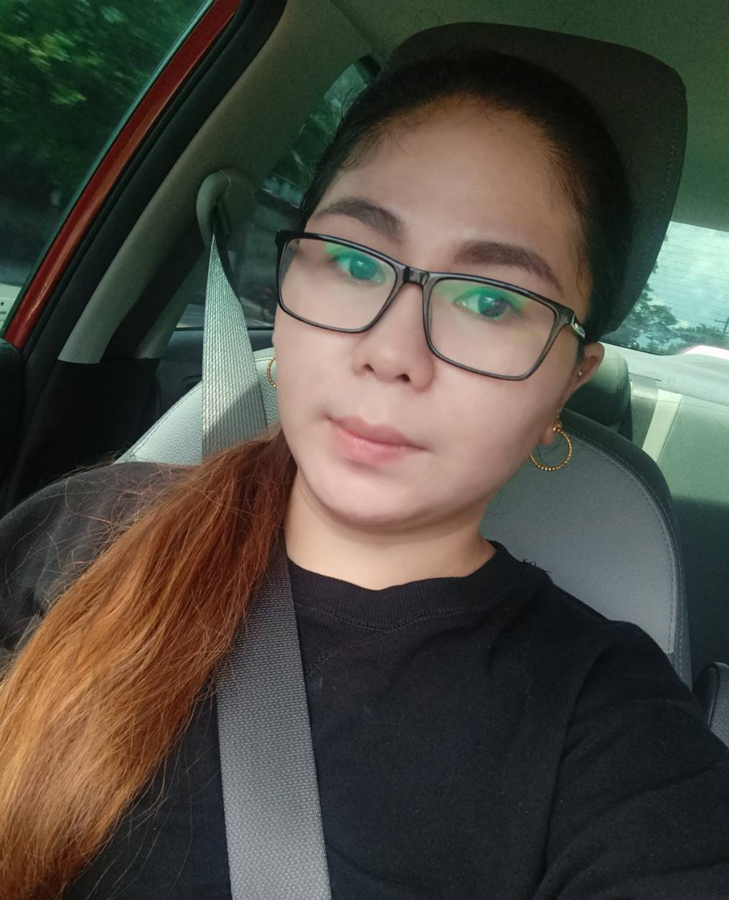

Daisery Factor

Summary
Resourceful Call Center Representative who consistently meets and exceeds productivity goals. Proven capacity to troubleshoot issues to resolve issues quickly. Maintains a high level of professionalism, patience and efficiency to minimize customer dissatisfaction and increase customer loyalty.
Education
- Bachelor of Science in Computer Engineering - AMAOed
Work Experience
Operations Executive - AEGIS PeopleSupport
December 2012-June 2013
Account: Orbitz.com/Cheaptickets.com
- Arrange travel for business and vacation customers.
- Book reservations for travel, hotels, rental cars and special events, such as tours and excursions.
- Plan and arrange tour packages, excursions and day trips.
Technical Support Representative - VXI Global Solutions Inc
July 2013-August 2014
Account: AT&T Uverse
- Manages inbound customer calls for AT&T Uverse cable, internet and home phone technical issues.
- Plans network installations by studying technical specifications; preparing an installation schematic.
- Maintains network by troubleshooting and repairing outages; testing network back-up procedures; updating documentations
Promoted to SME ( Subject Matter Expert) from December 2013-January 2016.
As SME:
- Provide floor support, learning sessions, coaching and feedback to agents.
- Assists in driving metrics of the assigned team.
- Supervise team in the absence of the Team Leader.
- Monitor performance and quality scores of team.
Customer Service Representative - WIPRO BPO INC
March 2017- September 2017
Account: Bestbuy.com
- Provides order and escalation support by answering customer calls on the sales process, scheduling deliveries, post-sale calls order addressing problems & concerns, processing system queues & alerts and report reconciliation.
- Process sales transactions including new orders, return & exchanges, releases and more while following Best Buy selling-skills sales process.
- Maintain knowledge of multi-channel sales systems such as Order Management System (OMS), Field Management System (FMS), online ordering and more to ensure customers' technology needs are met.
Technical Support Representative - The Results Company
March 2017- September 2017
Account: Comcast (Cable)
- Identifies customer cable issues.
- Determines the appropriate solution based on diagnosis and executes the most logical fix providing verbal instruction to customer at a level of detail commensurate with customer DVR/STB knowledge and experience.
- troubleshoots customer connectivity including but not limited to: Modem, Router, DVR, STB or combination device (stability of equipment as well as configuration).
Virtual Executive Manager - Krigler
January 2018 - Current
- Manage company emails
- Monitors all Europe stores and manage all Europe stores emplyees
- Bookkeeping, accounting, HR tasks
Skills
- Call Center Operations
- Customer Service
- Clear and effective communications skills, verbal and written.
- Skip Tracing and Internet Research.
- Technical and Customer Support.
- Order Processing and Transaction Management.
- Data Entry and Database Administration.
Other